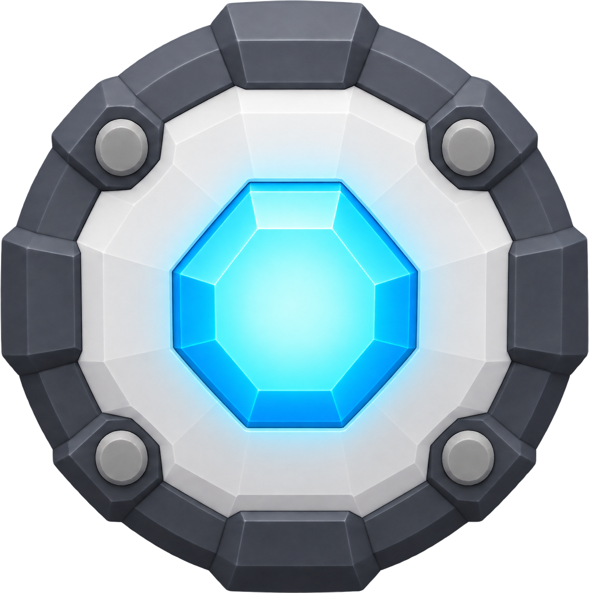
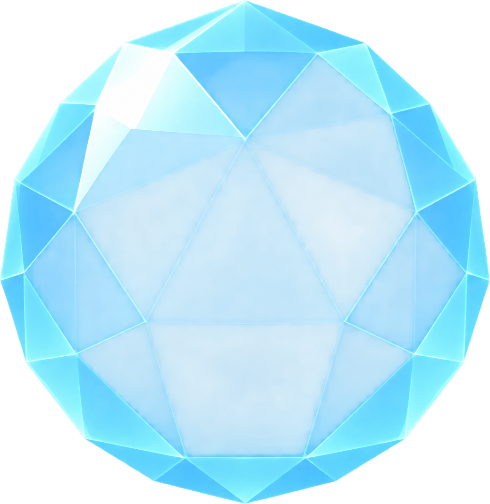

| gpt-image-2.5-sunburst-fal | |
|---|---|
| pickup |  ok · US$ 0,17 · original · json   warn · US$ 0,17 · original · json el contenido toca el borde (left): puede estar cortado |
| bubble |   warn · US$ 0,17 · original · json el contenido toca el borde (bottom, left): puede estar cortado  warn · US$ 0,17 · original · json el contenido toca el borde (bottom, left): puede estar cortado |